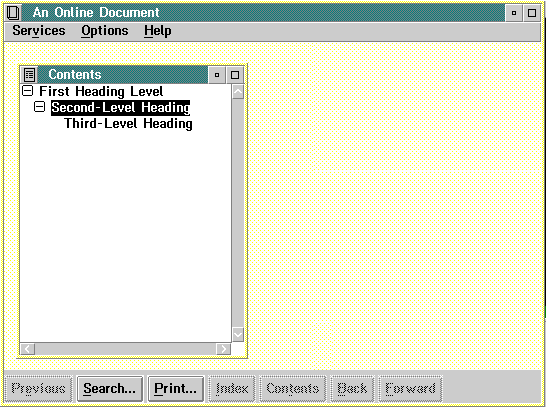

Every heading tag that starts a window must have an associated text string. The text string becomes the window title and appears in the title bar of the window. The window title also becomes an entry in the Contents window, which lists the headings of all topics in an online document.
For a window that occupies the full width of the screen, the maximum length of a text string, including spaces and blanks, is 70 characters. A narrower window requires a shorter text string. The text string can be on the same line as the heading tag, or at the beginning of the next line.
The following example shows the tagging for the first three heading levels, with a paragraph following each heading.
:userdoc. :title.An Online Document :h1.First Heading Level :p. This window is defined by a first-level heading tag. :h2.Second-Level Heading :p. This window is defined by a second-level heading tag. :h3.Third-Level Heading :p. This window is defined by a third-level heading tag. :euserdoc.
The Contents window for the formatted output shows the three heading-level entries.

A Contents Window